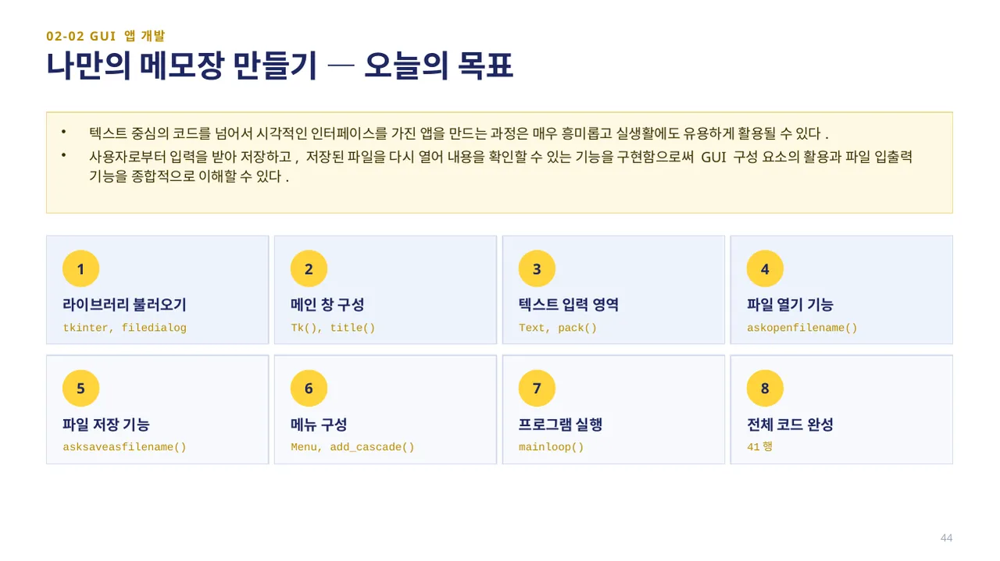
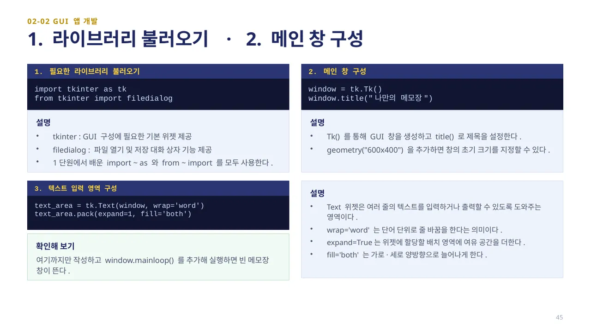
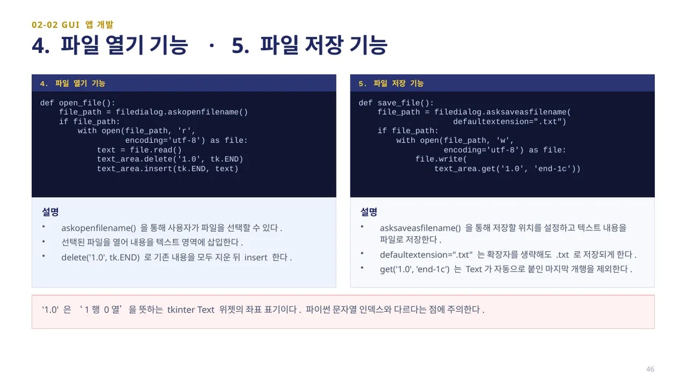
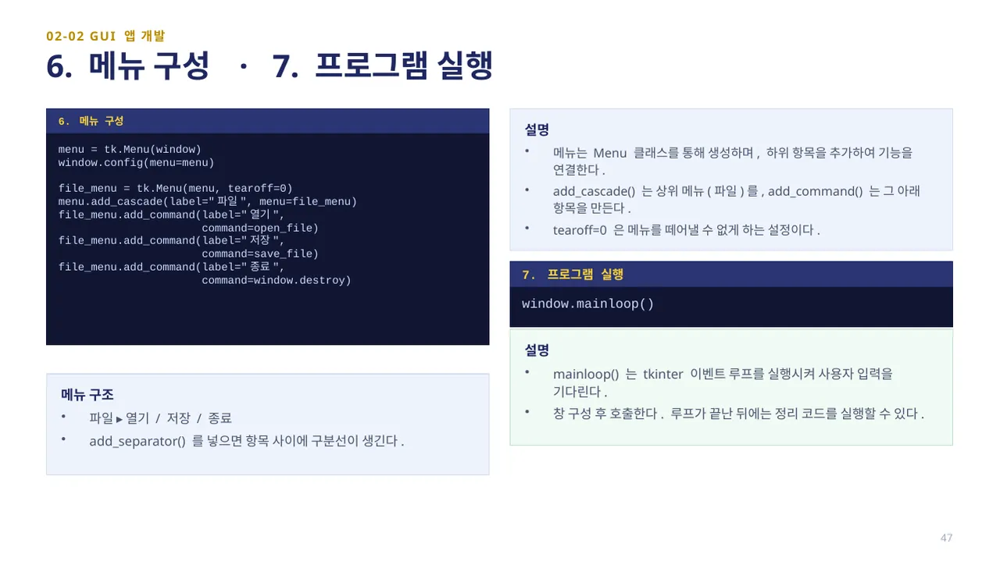
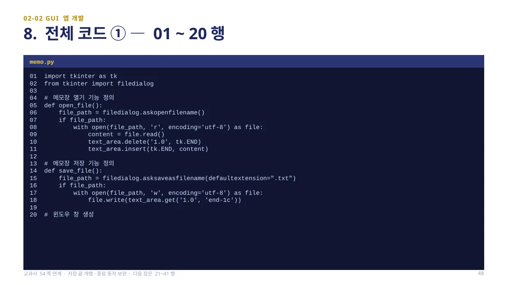
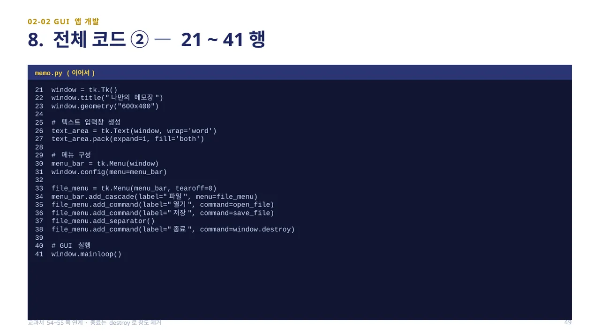
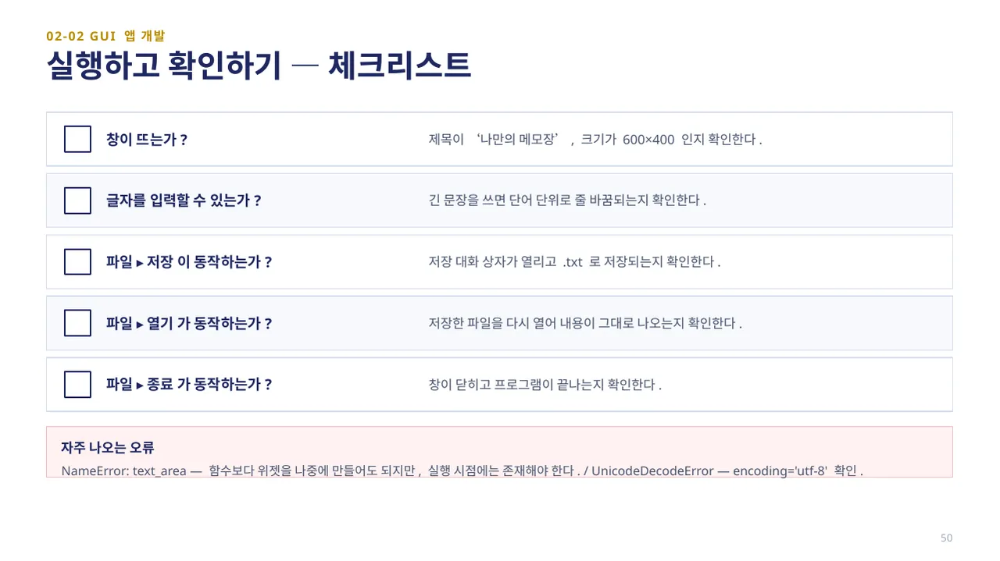
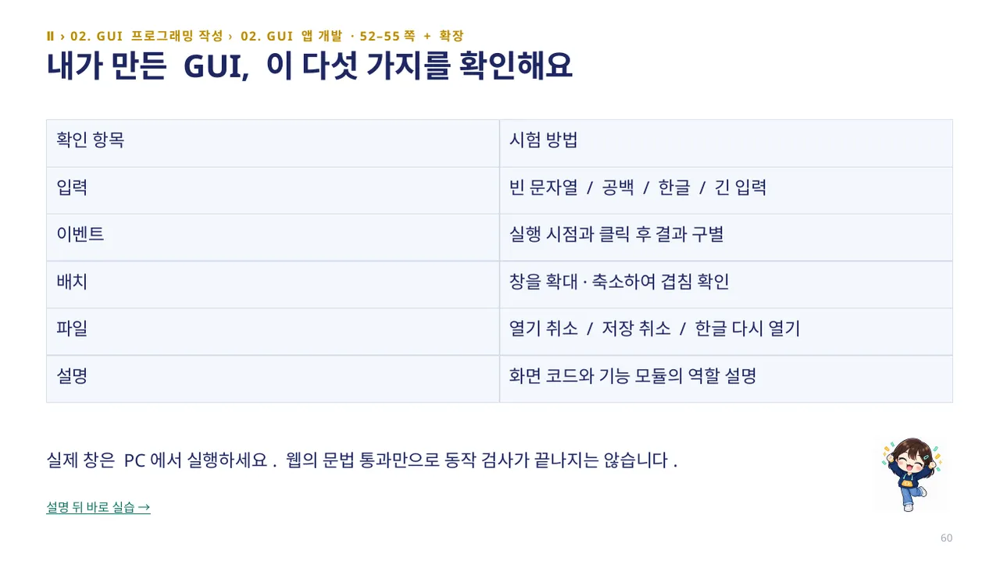

인공지능 파이썬 실무
인공지능 파이썬 실무대단원 Ⅱ. GUI 프로그래밍 교과서 40–59쪽
중단원 02. GUI 프로그래밍 작성 · 49–57쪽
소단원 02. GUI 앱 개발 · 52–55쪽
이 웹 주제의 연계 범위: 52–55쪽
교과서 52–55쪽
GUI 앱 개발 · 나만의 메모장 만들기
열기와 저장을 만드는 동안 1단원의 import와 함수가 다시 등장합니다.








직접 해 보세요
- 새 파일 저장, 기존 파일 열기, 대화 상자 취소를 각각 시험하세요.
- 파일 열기 코드의 순서를 섞은 뒤 다시 배열하세요.
- 메뉴를 누르기 전에 파일 대화 상자가 뜬다면 어떤 코드를 확인할까요?
이 설명으로 해 보는 실습
예제마다 페이지가 따로 있습니다. 카드를 누르면 설명과 코드가 함께 열립니다.
교과서 메모장 · tkinter 전체 코드
교과서 메모장 여덟 단계로 따라 만들기
이 튜토리얼은 GUI 창을 엽니다. 웹 실습실에서는 실행되지 않으니 코드를 복사해 PC의 파이썬(IDLE 등)에서 실행하며 따라 하세요.
① 라이브러리 불러오기. tkinter와 파일 대화 상자를 담당하는 filedialog를 불러옵니다.
import tkinter as tk from tkinter import filedialog확인: 아직 화면에 보이는 것은 없습니다. 오류 없이 실행되면 다음 단계로 넘어가세요.
② 메인 창 구성. Tk()로 창을 만들고 title·geometry로 제목과 크기를 정합니다.
import tkinter as tk from tkinter import filedialog window = tk.Tk() window.title("나만의 메모장") window.geometry("600x400") window.mainloop()확인: "나만의 메모장" 제목의 600×400 크기 빈 창이 뜹니다.
③ 텍스트 입력 영역 구성. Text 위젯을 만들고 창을 가득 채우도록 배치합니다. mainloop() 앞에 추가합니다.
text_area = tk.Text(window, wrap="word") text_area.pack(expand=1, fill="both")확인: 창 안에 여러 줄을 쓸 수 있는 흰 입력 영역이 창 전체를 채웁니다.
④ 파일 열기 기능. 창을 만들기 전(라이브러리 불러오기 다음)에 open_file() 함수를 정의합니다.
def open_file(): file_path = filedialog.askopenfilename() if file_path: with open(file_path, "r", encoding="utf-8") as file: content = file.read() text_area.delete("1.0", tk.END) text_area.insert(tk.END, content)확인: 아직 실행 화면은 바뀌지 않습니다. 이 함수를 호출할 메뉴는 다음에 연결합니다.
⑤ 파일 저장 기능. open_file() 아래에 save_file() 함수를 이어서 정의합니다.
def save_file(): file_path = filedialog.asksaveasfilename(defaultextension=".txt") if file_path: with open(file_path, "w", encoding="utf-8") as file: file.write(text_area.get("1.0", tk.END))확인: 마찬가지로 아직 실행 화면은 바뀌지 않습니다.
⑥ 메뉴 구성. text_area.pack() 다음, mainloop() 앞에 메뉴를 추가합니다.
menu_bar = tk.Menu(window) window.config(menu=menu_bar) file_menu = tk.Menu(menu_bar, tearoff=False) menu_bar.add_cascade(label="파일", menu=file_menu) file_menu.add_command(label="열기", command=open_file) file_menu.add_command(label="저장", command=save_file) file_menu.add_separator() file_menu.add_command(label="종료", command=window.quit)확인: 창 위에 "파일" 메뉴가 생기고, 누르면 열기·저장·(구분선)·종료 항목이 보입니다.
⑦ 프로그램 실행. 메뉴의 "열기"로 텍스트 파일을 선택하면 내용이 입력창에 나타나고, "저장"을 누르면 입력한 내용이 파일로 저장됩니다. 대화 상자에서 취소해도 오류 없이 창이 그대로 유지됩니다.
확인: 열기·저장·취소를 각각 시험해 오류 없이 동작하는지 확인합니다.
⑧ 전체 코드. 지금까지 만든 코드를 순서대로 모으면 교과서 54~55쪽의 완성 코드가 됩니다.
import tkinter as tk from tkinter import filedialog # 메모장 열기 기능 정의 def open_file(): file_path = filedialog.askopenfilename() if file_path: with open(file_path, "r", encoding="utf-8") as file: content = file.read() text_area.delete("1.0", tk.END) text_area.insert(tk.END, content) # 메모장 저장 기능 정의 def save_file(): file_path = filedialog.asksaveasfilename(defaultextension=".txt") if file_path: with open(file_path, "w", encoding="utf-8") as file: file.write(text_area.get("1.0", tk.END)) # 윈도우 창 생성 window = tk.Tk() window.title("나만의 메모장") window.geometry("600x400") # 텍스트 입력창 생성 text_area = tk.Text(window, wrap="word") text_area.pack(expand=1, fill="both") # 메뉴 구성 menu_bar = tk.Menu(window) window.config(menu=menu_bar) file_menu = tk.Menu(menu_bar, tearoff=0) menu_bar.add_cascade(label="파일", menu=file_menu) file_menu.add_command(label="열기", command=open_file) file_menu.add_command(label="저장", command=save_file) file_menu.add_separator() file_menu.add_command(label="종료", command=window.quit) # GUI 실행 window.mainloop()확인: 메모장 앱이 정상적으로 실행되며, 열기·저장·종료가 모두 동작합니다. 이 코드는 practice 카드의 「교과서 메모장 · tkinter 전체 코드」 예제와 같습니다.
PRACTICE / RETRY / UNDERSTAND
연습 문제
PRACTICE이 소단원 문제 10개 풀기 →
설명·힌트·정답과 함께 스스로 채점합니다.
LEARNING JOURNAL